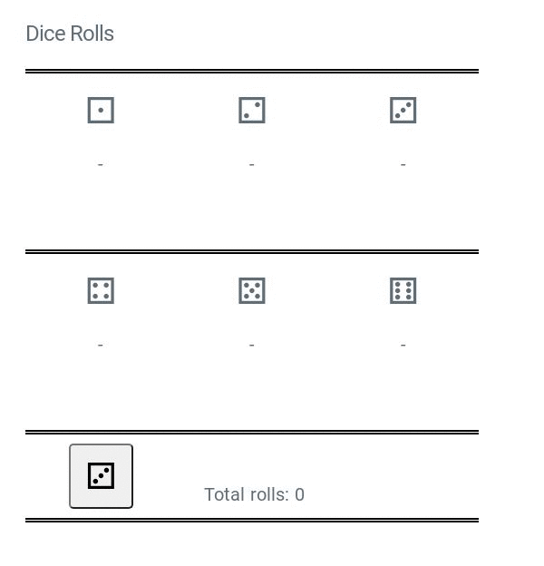

In this exercise you are going to implement a dice rolling application that counts totals for each number rolled and also the total count of dice rolls. The application should update the counts after each roll and also update the dice rolling button to show the latest value rolled. The image below shows how your final solution should look like:
Start by making sure you are in your local clone of the Git repository, and in its exercises/05_javascript/5.4-events-triggered-and-emitted directory where this instructions.html file is located.
In this exercise you are going to revise your knowledge on event listeners. You have already used event listeners in exercises 3.5 and 3.6 but this time your task is to listen and react to a custom event. You can learn more about custom events from this YouTube video.
This time you will create an application that keeps track of individual dice rolls. The function rollDice() for dice rolling is provided and it will trigger a custom event
rollDice on document every time it is called. You can get the value of the roll with event.detail.value inside your code. The custom event will have the value of the dice roll included and your task is to listen
to the event and update the HTML according to the value.
click event on the roll-button button and call the
rollDice() function once on every click.
rollDice event triggered on the
document whenever the rollDice() function is called. Inspect the triggered event and pick up the current value of the roll and update
the appropriate counters and the button value. Use the template tags inside the HTML and choose appropriate HTML for the button contents based on the latest roll. You can do everything inside a single event listener
function but that would be quite a complicated and large function and therefore it is not the ideal way to handle things. You should create separate event listeners to handle every counter and the button individually. Remember that every event
can have multiple listeners and they are all called when the event is triggered.
The grader will try to roll dice 100 times.
button.innerHTML to empty string and then append the new contents into it to achieve the same end result.
Remember to commit custom-events.js and push the changes to your Git repository before you submit your work in Plussa.